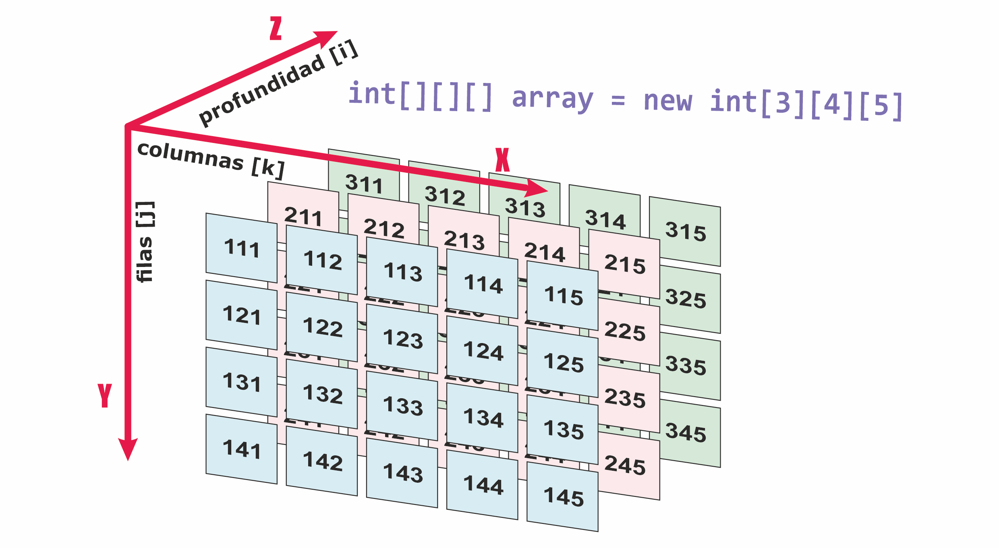
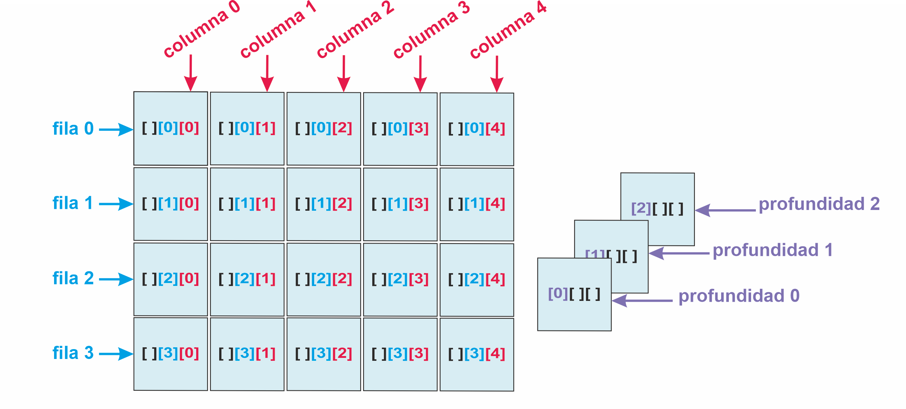
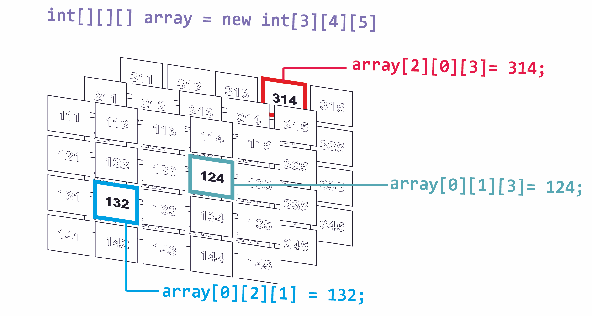
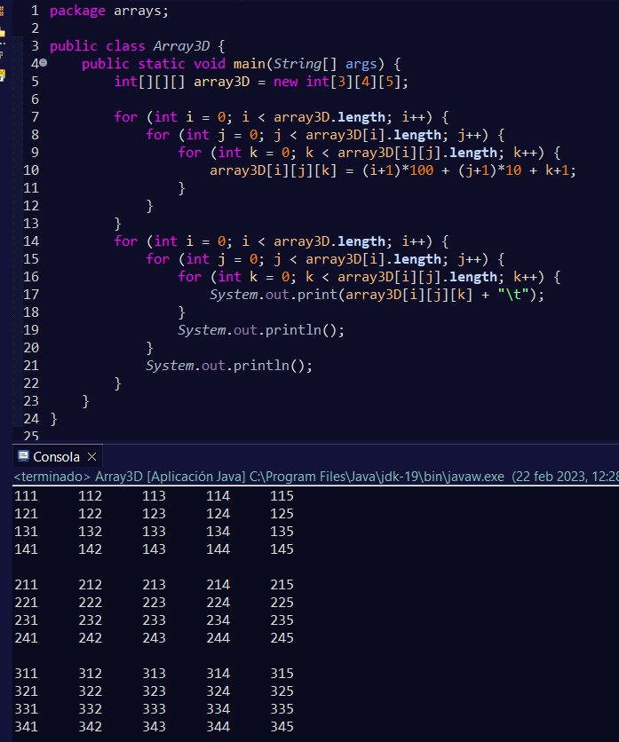
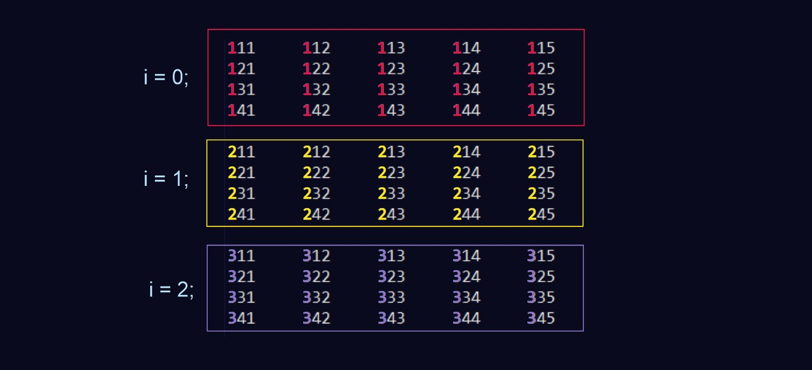
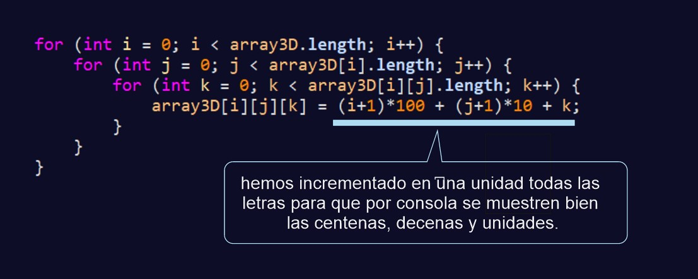
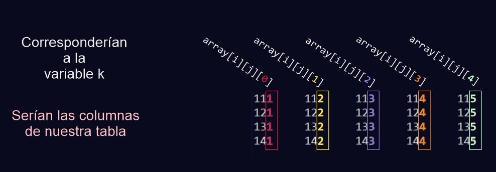
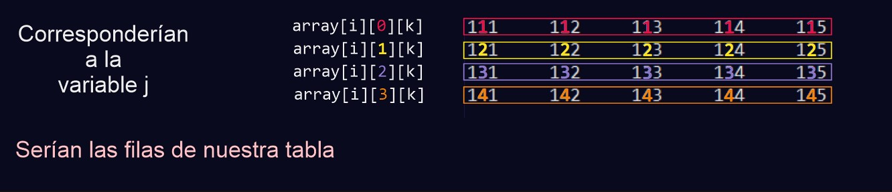
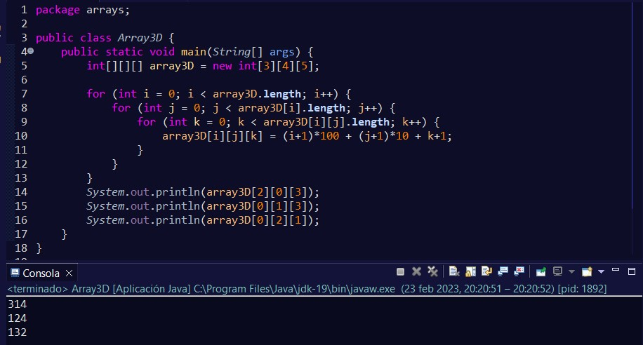

Si pensamos en un array de 3 dimensiones, es como si tuviéramos varias tablas dispuestas en el espacio. Donde la primera posición de nuestro array sería la profundidad de ésta.
Las otras dos posiciones del array serían las que conforman la tabla. A modo esquematizado se podría interpretar de esta forma:
Como se puede ver, la tabla se representa con la segunda posición y la última posición. Mientras que la primera posición es la profundidad.
El array de 3 dimensiones no se puede mostrar de forma tridimensional y se ve como que cada posición de i almacena en su interior una tabla:
Entonces, si quisiéramos acceder a una posición concreta de nuestro array deberíamos de indicarlo de esta forma:
El código de este array por consola tendría el siguiente aspecto:
De una forma más visual tenemos:
En el ejemplo se ha incrementado las posiciones una unidad porque tampoco se pueden visualizar los 0 en la consola.
Aquí se muestran las columnas, al igual que ocurría con el array bidimensional, salvo que en vez de corresponder a la segunda posición de nuestro array, es a la tercera.
Y las filas serían representadas en la segunda segunda posición.
Y por último, vamos a comprobar los elementos que antes habíamos seleccionado para verificar que efectivamente se obtienen indicando las posiciones de esa forma:
Ya puedes imaginar que existen más arrays multidimensionales, si fueran 4 dimensiones, por ejemplo, éstos agruparían un array tridimensional en cada posición.